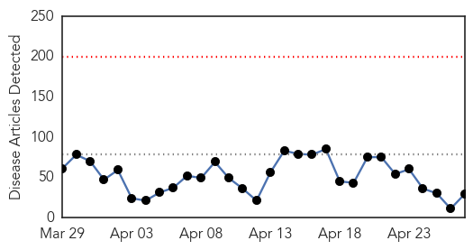
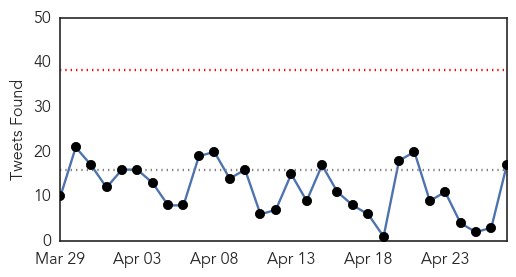
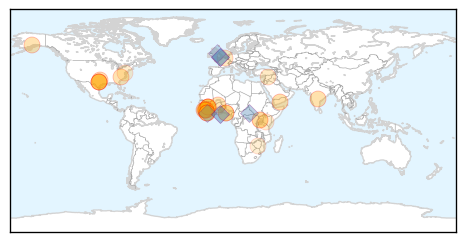
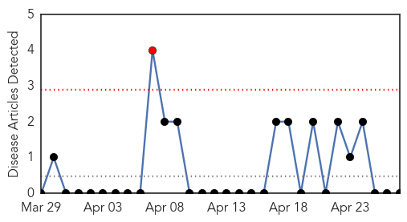

Ebola
30-Day Web Trend
0 alerts, 0 warnings

30-Day Twitter Trend
0 alerts, 0 warnings

Article Locations
Article Confidences

Top Articles:
- 0.999
- Sierra Leoneans to stay home in final push to stop Ebola Republican American
- 0.999
- WHO official praises Liberia's Ebola response
- 0.993
- S. Leone marks low-key independence day with post-Ebola plan
- 0.992
- UN chief names new head of Ebola mission as outbreak calms
- 0.990
- Down to zero: Recovering from Ebola in Sierra Leone
- 0.988
- W.H.O. alerts regional challenges
- 0.983
- Assuming epidemic is stemmed will only result in 'disaster next door'
- 0.978
- Ebola Diaries Creating Ways to Understand an Outbreak
- 0.965
- The Atlantic
- 0.959
- Ella Foundation completes preliminary studies on Ebola vaccine
- 0.935
- 54th Independence Anniversary message by His Excellency President Ernest Koroma
- 0.920
- When Science, Faith Clash
- 0.903
- Fiancee of Ebola victim hopes memoir closes chapter
- 0.901
- 'God Proved to the World That What Was Being Said Was a Lie;' Fiancée of First US Ebola Victim Blasts Media; Says Quarantine 'Ruined Her Life'
- 0.901
- 'God Proved to the World That What Was Being Said Was a Lie;' Fiancée of First US Ebola Victim Blasts Media; Says Quarantine 'Ruined Her Life'
- 0.891
- Togo's president to lead Ebola response
- 0.855
- Ebola: Clinical trials and tribulation
- 0.840
- When Science, Faith Clash: In Sierra Leone, a Deadly Gap Between Ritual and Medical Practices
- 0.812
- Texas Judge Halts Ebola Nurse Worker's Comp Claim
- 0.737
- Ambassador Nyenabo Urges Colleagues to Push Africa’s Interests
- 0.687
- Former senator says he was 'discouraged' by government response to U.S. Ebola cases
- 0.644
- Five billion people 'have no access to safe surgery'
- 0.639
- No life-saving surgery ‘for billions’
- 0.577
- Seattle Training Program Saves Lives in Kenya
- 0.566
- Sen. Taylor Lauds World Attention to Mano River Union Plight
- 0.564
- More deaths in Nigeria 'local gin' poisoning: health official
- 0.563
- More deaths in Nigeria `local gin` poisoning: Health official
- 0.558
- More Deaths in Nigeria 'Local Gin' Poisoning — Naharnet
- 0.509
- African singers remake 'We are the world' against Xenophobia, Ebola (video)
Top Tweets:
- 0.955
- Ebola still going strong in Liberia - American Thinker (blog) http://t.co/ECLqvaxSbx ebola EVD
- 0.955
- Ebola Still Going Strong in Liberia - American Thinker (blog) http://t.co/QwNaD7wqek ebola EVD
- 0.938
- World's largest open source health information technology project tackles Ebola - Medical Xpress http://t.co/KLSwNLQw2W ebola EVD
- 0.918
- RT: Schools reopen in Sierra Leone as Ebola outbreak wanes http://t.co/ehhljJYEkt htt…
- 0.918
- Ebola Update: 26,101 confirmed, probable & suspected cases reported in 3 most affected countries, with 10,824 deaths. EbolaResponse
- 0.915
- Ebola 400 days on: Assuming epidemic is stemmed will only result in 'disaster ... - International ... http://t.co/IHExXajfZu ebola EVD
- 0.898
- Response to Ebola scare impressive - The Daily Citizen http://t.co/Sj0dZsym3t ebola EVD
- 0.885
- Former Peorian's son wins Pulitzer Prize for coverage of ebola epidemic - Peoria Journal Star http://t.co/hHBdzQKLvK ebola EVD
- 0.885
- Cluster of Ebola Virus Disease, Bong and Montserrado Counties, Liberia http://t.co/4NjX9Ieled
- 0.875
- Ella Foundation completes preliminary studies on Ebola vaccine - Zee News http://t.co/smFx5L7aHT ebola EVD
- 0.870
- RT: Our Ebola awareness posters reached Freetown, Sierra Leone. Together we will tackle Ebola http:/…
- 0.867
- RT: Blog on article by Prof Azra Ghani - ebola effect on malaria cases, and urgent need for nets in ebola affected areas http:/…
- 0.846
- The very reason we need Ebola therapeutics R&D response is because extensive public health measures were not enough
- 0.825
- Cartersville-based Phoenix Air has become Ebola go-to company - The Polk Fish Wrap http://t.co/kmmw1pvmmy ebola EVD
- 0.780
- Ebola outbreak likely driving 3.9m malaria deaths http://t.co/wjvVbRrwkG via
- 0.769
- ebola. Impact sur les systèmes de santé @acapsproject http://t.co/3Wyu6KFnSD
- 0.768
- Olivia Wilde's New Passion Project: Helping Ebola Orphans - People Magazine http://t.co/d2VCMhjmJl ebola EVD
- 0.767
- Reports detail experimental Ebola treatment, virus evolution @cidrap http://t.co/H6ERrih5qR
- 0.739
- Doctor who survived Ebola to speak at IU School of Medicine - The Olympian http://t.co/hkYdMO9ncN ebola EVD
- 0.666
- Monitoring of Ebola Virus Makona Evolution through Establishment of Advanced Genomic Capability in Liberia http://t.co/olV269ISDs
- 0.662
- Doctor who survived Ebola to speak at IU School of Medicine - WISH-TV http://t.co/atFAxoCLeL ebola EVD
- 0.643
- RT: Spot the error; $5.1 bn to control Ebola, but just $6.9 million to setup 'African CDC' to help stop future epidemics. …
- 0.635
- Ebola : le mystérieux mal qui ronge les survivants de l'épidémie http://t.co/DUPqiwZU4t via
- 0.634
- New clusters of Ebola infections in Sierra Leone prove frustrating in the effort to get to zero new cases http://t.co/5gLq7eo3wh
- 0.614
- Liberia At Crossroads of Being Declared 'Ebola Free', If... - http://t.co/NaiI6J3xGL http://t.co/eouxe9f1jR ebola EVD
- 0.599
- Malaria morbidity and mortality in Ebola-affected countries caused by decreased health-care capacity http://t.co/rSbWotaOJH
- 0.596
- There has been only 1 new confirmed Ebola case reported in SierraLeone during last 3 days (24–26 April). Vigilance is key EbolaResponse
- 0.573
- Ebola diaries: Creating ways to understand an outbreak http://t.co/kjsSmgso8J
- 0.571
- The number of new Ebola cases is holding steady: http://t.co/x8Uqrsa0rt AfricaAgainstEbola
- 0.570
- Breakdown of confirmed new Ebola cases by week - see our latest Cross-Border Bulletin https://t.co/lVPmQBFhBM EbolaResponse
- 0.563
- $1.7 Billion Needed to Improve Ebola-hit Countries' Health Care, Says Oxfam:... http://t.co/I2M4Mbqst6
- 0.557
- Ebola: What Liberia needs next http://t.co/Pev8vmf0Mf via
- 0.552
- RT: Download to help Medecins Sans Frontieres fight ebola in West Africa WorldHealthDay http://t.co/…
- 0.549
- RT: @AfricaStopEbola Africa stop Ebola - Tiken Jah Fakoly, Amadou & Mariam, Salif Keita, Oumou Sangare and others. https…
- 0.544
- What's amazing is the suggestion that IP&C efforts & therapeutics/vaccine research are mutually exclusive in Ebola
- 0.527
- Ebola still going strong in Liberia - American Thinker (blog) http://t.co/430lN2hZAu
- 0.502
- A Conversation with Dr. Mory Togba in Kindia, Guinea Ebola http://t.co/hGVbSrNGd1
Mold/Fungal
30-Day Web Trend
1 alerts, 0 warnings

30-Day Twitter Trend
0 alerts, 0 warnings

Article Locations

Article Confidences

Top Articles:
-
No articles found for Apr 27, 2015
Top Tweets:
-
No tweets found for Apr 27, 2015